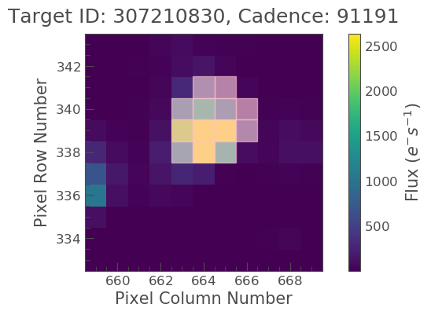
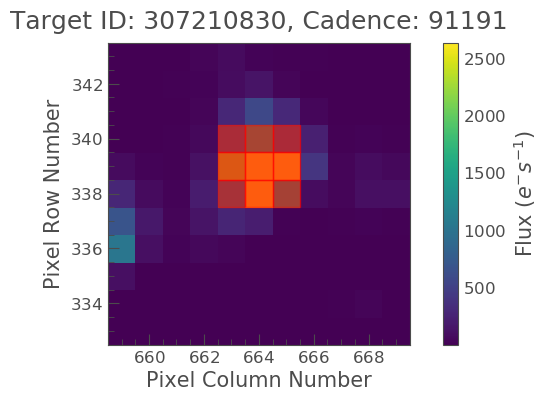
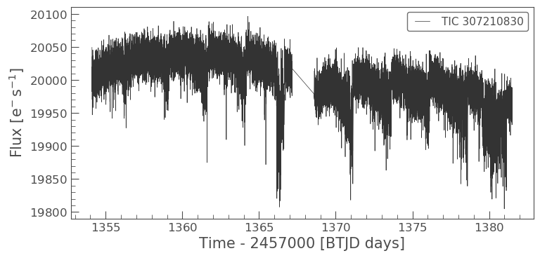

Understanding aperture photometry & making custom apertures.
Learning goals
In our previous tutorials (LightCurve object and LightCurveFile object) we learned about aperture photometry and the Simple Aperture Photometry (SAP) and Pre-search Data Conditioning SAP (PDCSAP) flux.
We have not however discussed how these apertures are chosen by the pipeline or how to examine them.
In this proposal we will cover the following, - How apertures are defined. - How can we examine a pre-defined aperture. - How we can define and modify an aperture and recover the light curve.
SPOC apertures
In aperture photometry A set of pixels in the image are chosen and we sum those to produce a single flux value. The SPOC produces an optimal aperture, which is used by default in Lightkurve, and determined by the data processing pipeline. This is the default aperture used by Lightkurve and is optimized to ensure that the stellar signal has a high signal to noise ratio, with minimal contamination from the background.
We sum these same pre-selected pixels for every image at each cadence to produce a light curve.
There are however, some cases where you might want to produce your own aperture. The field may be crowded, or you may wish to change the aperture size to change the relative contribution of the background. Lightkurve offers tools to select pixels programmatically.
We will show you how to examine the pre-selected aperture and how to modify it if you wish.
Imports
This tutorial requires: - Lightkurve - Matplotlib - numpy
Defining terms
- Target Pixel File (TPF): A file containing the original CCD pixel observations from which light curves are extracted.
- LightCurve Object: Obtained from a TPF and contains light curve information derived using simple aperture photometry.
- LightCurveFile Object: Obtained from MAST and contains both SAP flux and PSDCSAP flux.
- Cadence: The rate at which TESS photometric observations are stored.
- Sector: One of TESS’s 27 (to date) observing periods, approximately ~27 days in duration.
- Simple Aperture Photometry (SAP): The act of summing all pixel values in a pre-defined aperture as a function of time.
- Pre-search Data Conditioning SAP flux (PDCSAP) flux : SAP flux from which long term trends have been removed using so-called Co-trending Basis Vectors (CBVs). PDCSAP flux is usually cleaner data than the SAP flux and will have fewer systematic trends.
%matplotlib inline import numpy as np import lightkurve as lk import matplotlib.pyplot as plt
Downloading the data
For this tutorial lets use the L 98-59 System again, focusing on planet c. First let’s search for a TPF for this object.
search_result = lk.search_targetpixelfile('TIC 307210830') search_resultSearchResult containing 7 data products.
| # | observation | author | target_name | productFilename | distance |
|---|---|---|---|---|---|
| 0 | TESS Sector 2 | SPOC | 307210830 | tess2018234235059-s0002-0000000307210830-0121-s_tp.fits | 0.0 |
| 1 | TESS Sector 5 | SPOC | 307210830 | tess2018319095959-s0005-0000000307210830-0125-s_tp.fits | 0.0 |
| 2 | TESS Sector 8 | SPOC | 307210830 | tess2019032160000-s0008-0000000307210830-0136-s_tp.fits | 0.0 |
| 3 | TESS Sector 9 | SPOC | 307210830 | tess2019058134432-s0009-0000000307210830-0139-s_tp.fits | 0.0 |
| 4 | TESS Sector 10 | SPOC | 307210830 | tess2019085135100-s0010-0000000307210830-0140-s_tp.fits | 0.0 |
| 5 | TESS Sector 11 | SPOC | 307210830 | tess2019112060037-s0011-0000000307210830-0143-s_tp.fits | 0.0 |
| 6 | TESS Sector 12 | SPOC | 307210830 | tess2019140104343-s0012-0000000307210830-0144-s_tp.fits | 0.0 |
Lets pick and download the data for sector 2.
tpf_file = search_result[0].download() tpf_file
TessTargetPixelFile(TICID: 307210830)
We now have a TPF file for our object in sector 2. The optimal aperture is stored in the TPF as the pipeline_mask property. We can have a look at it by calling it here:
tpf_file.pipeline_mask
array([[False, False, False, False, False, False, False, False, False,
False, False],
[False, False, False, False, False, False, False, False, False,
False, False],
[False, False, False, False, False, False, False, False, False,
False, False],
[False, False, False, False, False, False, False, False, False,
False, False],
[False, False, False, False, False, False, False, False, False,
False, False],
[False, False, False, False, True, True, True, False, False,
False, False],
[False, False, False, False, True, True, True, True, False,
False, False],
[False, False, False, False, True, True, True, True, False,
False, False],
[False, False, False, False, False, True, True, False, False,
False, False],
[False, False, False, False, False, False, False, False, False,
False, False],
[False, False, False, False, False, False, False, False, False,
False, False]])
As you can see, it is a boolean array detailing which pixels are included. We can plot this aperture over the top of our TPF using the plot() function, and passing in the mask to the aperture_mask keyword.
tpf_file.plot(aperture_mask=tpf_file.pipeline_mask);
We now see the SPOC optimal aperture mask overlaid on top of our object of interest.
Using the provided optimal aperture in pipeline_mask and the TPF we can perform simple aperture photometry via the extract_aperture_photometry function as shown below,
lc = tpf_file.extract_aperture_photometry() lcTessLightCurve targetid=307210830 length=18317
| time | flux | flux_err | centroid_col | centroid_row | cadenceno | quality |
|---|---|---|---|---|---|---|
| electron / s | electron / s | pix | pix | |||
| object | float32 | float32 | float64 | float64 | int32 | int32 |
| 1354.1088231272427 | 21566.349609375 | 16.116119384765625 | 664.6090864691554 | 339.4764484490161 | 91191 | 0 |
| 1354.1102119888994 | 21563.88671875 | 16.118038177490234 | 664.6261723169015 | 339.46842003296774 | 91192 | 0 |
| 1354.112989712153 | 21475.162109375 | 16.089221954345703 | 664.606630403678 | 339.4604662968742 | 91194 | 0 |
| 1354.1143785738097 | 21583.30859375 | 16.12527084350586 | 664.6414481151693 | 339.4832617761526 | 91195 | 0 |
| 1354.1157674355243 | 21575.640625 | 16.121679306030273 | 664.6354584758038 | 339.4735678477034 | 91196 | 0 |
| 1354.1171562971804 | 21563.1015625 | 16.115528106689453 | 664.6334974032626 | 339.472138768046 | 91197 | 0 |
| 1354.1185451588947 | 21552.935546875 | 16.112627029418945 | 664.625177003332 | 339.46675685339096 | 91198 | 0 |
| 1354.1199340205515 | 21532.90234375 | 16.10567855834961 | 664.6301979867933 | 339.4699372207359 | 91199 | 0 |
| 1354.1213228822667 | 21533.828125 | 16.105731964111328 | 664.6262018316135 | 339.46553338843 | 91200 | 0 |
| ... | ... | ... | ... | ... | ... | ... |
| 1381.5001032523294 | 21262.494140625 | 16.291688919067383 | 664.5744500858646 | 339.3513278016392 | 110913 | 0 |
| 1381.5014921207378 | 21289.828125 | 16.302898406982422 | 664.5797804765874 | 339.3491398520347 | 110914 | 0 |
| 1381.5028809891458 | 21266.3515625 | 16.29288673400879 | 664.5790106545255 | 339.3513312907625 | 110915 | 0 |
| 1381.5042698574382 | 21234.845703125 | 16.279603958129883 | 664.5730941550626 | 339.3555631381705 | 110916 | 0 |
| 1381.5056587258466 | 21244.953125 | 16.281909942626953 | 664.5782007755507 | 339.3468316465567 | 110917 | 0 |
| 1381.5070475942555 | 21210.7578125 | 16.267162322998047 | 664.5770708377116 | 339.3442359060069 | 110918 | 0 |
| 1381.508436462548 | 21231.01171875 | 16.27315330505371 | 664.5786574675517 | 339.34217245510536 | 110919 | 0 |
| 1381.5098253309563 | 21250.466796875 | 16.277507781982422 | 664.5722297003167 | 339.3513272975753 | 110920 | 0 |
| 1381.5112141992488 | 21236.35546875 | 16.2720890045166 | 664.582152318805 | 339.3452178427711 | 110921 | 0 |
| 1381.5126030676577 | 21265.83984375 | 16.278945922851562 | 664.5729270180528 | 339.349710493043 | 110922 | 0 |
The same result can also be obtained via,
lc = tpf_file.to_lightcurve(aperture_mask=tpf_file.pipeline_mask)
Creating your own masks
You don’t necessarily have to pass in the pipeline_mask to the plot() function, it can be any mask you choose yourself, provided it is the right shape. We will now explain how to adjust this mask using the create_threshold_mask function. This method will identify the pixels in the TPF which show a median flux that is brighter than threshold times the standard deviation above the overall median. The standard deviation is estimated in a robust way by multiplying the Median Absolute Deviation (MAD) with 1.4826. In this example we will pick 10 as our threshold.
target_mask = tpf_file.create_threshold_mask(threshold=10, reference_pixel='center') n_target_pixels = target_mask.sum() n_target_pixels
13
We have now created a target mask which covers 13 pixels. Lets plot this up and see what it looks like.
tpf_file.plot(aperture_mask=target_mask, mask_color='r');
We see that this is slightly different to the optimal aperture previously defined. It also looks like there might be too many background pixels included. Lets see if we can adjust this.
Specify an aperture array
We need to define a new aperture array such that our aperture will cover our object of interest only. We have seen that apertures are defined within boolean arrays, based on this lets make up a new array.
aper_new = np.zeros(tpf_file.shape[1:], dtype=bool) aper_new[5:8, 4:7] = True tpf_file.plot(aperture_mask=aper_new, mask_color='red')
<matplotlib.axes._subplots.AxesSubplot at 0x7fa1790b85c0>
OK great, it looks like we have covered our object,but not included too much background. Lets now make this into a light curve.
target_lc_new = tpf_file.to_lightcurve(aperture_mask=aper_new) target_lc_newTessLightCurve targetid=307210830 length=18317
| time | flux | flux_err | centroid_col | centroid_row | cadenceno | quality |
|---|---|---|---|---|---|---|
| electron / s | electron / s | pix | pix | |||
| object | float32 | float32 | float64 | float64 | int32 | int32 |
| 1354.1088231272427 | 20049.26953125 | 15.38568115234375 | 664.5377949438838 | 339.37615072204693 | 91191 | 0 |
| 1354.1102119888994 | 20029.6015625 | 15.380707740783691 | 664.5539189658597 | 339.3674922369538 | 91192 | 0 |
| 1354.112989712153 | 19982.47265625 | 15.365057945251465 | 664.5351012281784 | 339.36145689194564 | 91194 | 0 |
| 1354.1143785738097 | 19994.115234375 | 15.368595123291016 | 664.5664578479 | 339.38061605675574 | 91195 | 0 |
| 1354.1157674355243 | 20003.728515625 | 15.371517181396484 | 664.5610361707227 | 339.37135598634495 | 91196 | 0 |
| 1354.1171562971804 | 19999.60546875 | 15.368359565734863 | 664.5594608485563 | 339.3702259541033 | 91197 | 0 |
| 1354.1185451588947 | 20019.8046875 | 15.375614166259766 | 664.5527183393958 | 339.3662359200094 | 91198 | 0 |
| 1354.1199340205515 | 19982.787109375 | 15.361979484558105 | 664.5567752197887 | 339.36859919546725 | 91199 | 0 |
| 1354.1213228822667 | 20002.78515625 | 15.369135856628418 | 664.5538246562905 | 339.3650181579328 | 91200 | 0 |
| ... | ... | ... | ... | ... | ... | ... |
| 1381.5001032523294 | 19974.763671875 | 15.560335159301758 | 664.5105008707154 | 339.2613672501821 | 110913 | 0 |
| 1381.5014921207378 | 19988.509765625 | 15.56753158569336 | 664.5151411160459 | 339.25840629283164 | 110914 | 0 |
| 1381.5028809891458 | 19959.5 | 15.55550765991211 | 664.5136800320821 | 339.2605986305007 | 110915 | 0 |
| 1381.5042698574382 | 19942.931640625 | 15.547529220581055 | 664.5087002343405 | 339.2654600563855 | 110916 | 0 |
| 1381.5056587258466 | 19961.890625 | 15.553683280944824 | 664.514156119857 | 339.2574522478159 | 110917 | 0 |
| 1381.5070475942555 | 19938.53515625 | 15.542488098144531 | 664.5135819475233 | 339.25510331494837 | 110918 | 0 |
| 1381.508436462548 | 19942.68359375 | 15.544118881225586 | 664.513915654913 | 339.25242635657816 | 110919 | 0 |
| 1381.5098253309563 | 19965.841796875 | 15.549737930297852 | 664.5082952466375 | 339.2615657982662 | 110920 | 0 |
| 1381.5112141992488 | 19945.671875 | 15.542808532714844 | 664.5173951664624 | 339.25568362598784 | 110921 | 0 |
| 1381.5126030676577 | 19982.890625 | 15.55328369140625 | 664.5085713660441 | 339.2605124583506 | 110922 | 0 |
Compare data & light curves
We have now created light curve objects using both the SPOC pre-defined aperture and a mask of our own devising. Lets plot these light curves up and examine the difference.
lc.plot();

target_lc_new.plot();
As you can see the light curves from the two apertures look very different. It looks as if the aperture we have defined manually may have less background or contaminating flux from scattered than the SPOC aperture. We will learn more about contamination in our next tutorial.